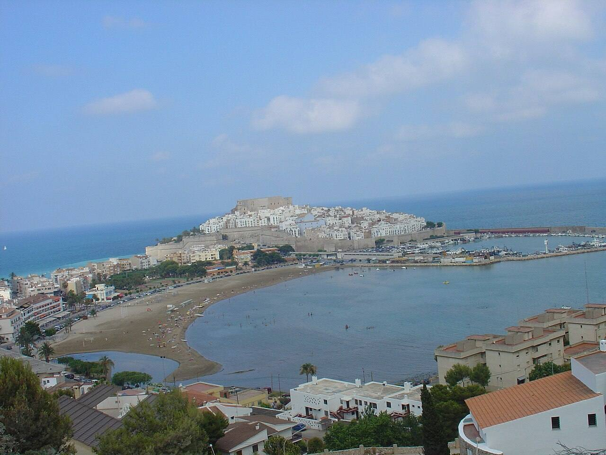
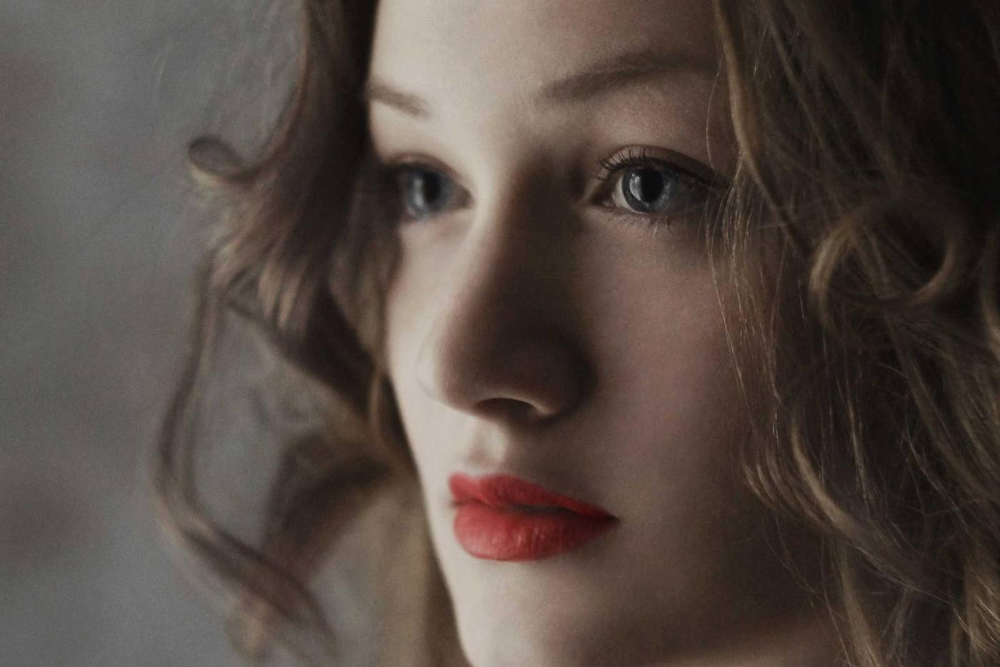
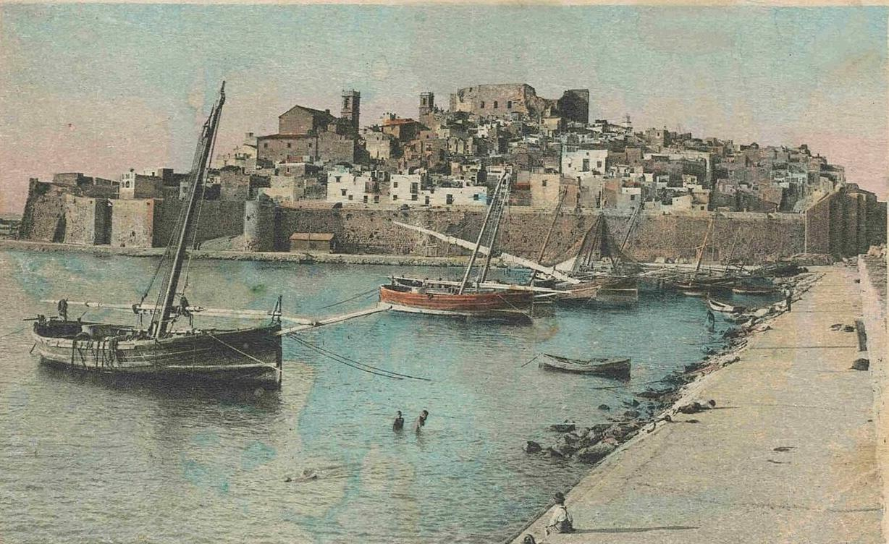
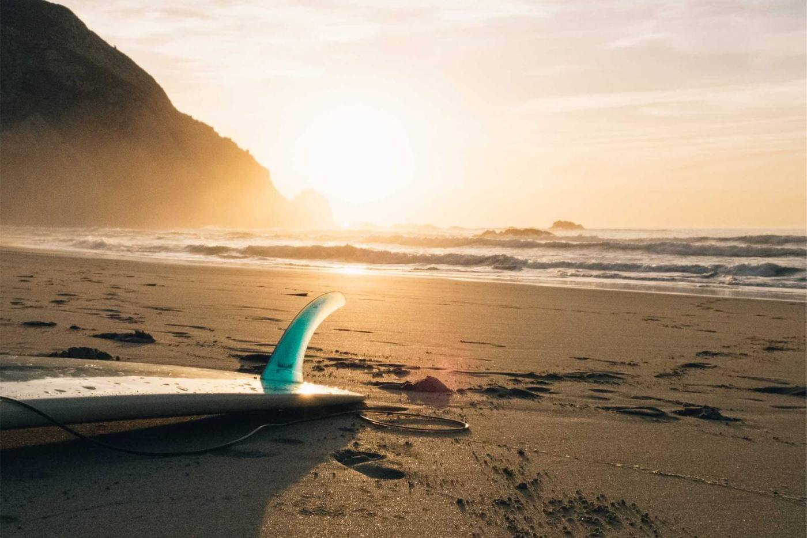

Óptica Maestrat
Óptica en el Mercat de Benicarló desde 1994
Gafas para ver bien y para el sol
Revisamos tu vista gratis, montamos tus gafas en la tienda y te ayudamos a elegir montura y cristal. Graduado, progresivos, lentillas y sol.
Ver servicios y preciosGafas de sol y graduadas
 Gafas de solProbar cristales →
Gafas de solProbar cristales →
 Gafas graduadasCómo graduamos →
Gafas graduadasCómo graduamos →
Mira Peñíscola con cada cristal
Mueve el cristal por la foto y cambia de tinte: dentro del círculo ves Peñíscola como la verías con esas gafas.

El verde clásico de las gafas de aviador. Respeta los colores y descansa la vista con mucha luz.

Lo que hacemos y lo que cuesta
- VistaRevisión completa de la vistaGratis
- VistaControl de vista infantilGratis
- VistaMedida de la presión ocularGratis
- GraduadoMonofocales, montura y cristalesdesde 89 €
- GraduadoProgresivos, montura y cristalesdesde 249 €
- GraduadoOcupacionales para ordenadordesde 149 €
- SolGafas de sol de marcadesde 99 €
- SolGafas de sol graduadasdesde 159 €
- LentillasAdaptación y primera pruebaGratis
- LentillasMensuales, caja de 6desde 24 €
- TallerAjuste, tornillos y plaquetasGratis
- TallerCristales nuevos en tu monturadesde 59 €
Cómo graduamos tu vista
Primero, la revisión
Medimos cada ojo por separado, de lejos y de cerca. Si llevas gafas, tráelas y comparamos con tu graduación de antes.

Después, la prueba
Con la gafa de prueba confirmamos la graduación caminando por la tienda y leyendo. Así eliges cristal sabiendo cómo vas a ver.
Al final, la entrega
En unos días tienes tus gafas. Te las ajustamos a la cara y, si el primer mes algo no va, lo revisamos sin coste.

Peñíscola desde el muelle, postal de hacia 1930.
Una óptica de aquí
Más de treinta años en el bajo del 7‑bis, al lado del Mercat. Por aquí han pasado las primeras gafas de muchos niños de Benicarló y los progresivos de sus abuelos.
Graduamos, montamos y ajustamos en la propia tienda. Y las gafas de sol las pruebas en la puerta, con la luz de verdad.
- Desde
- 1994
- Dónde
- Mercat, 7‑bis
- Comarca
- Baix Maestrat
- Ray‑Ban
- Persol
- Oakley
- Vogue
- Carrera
La luz del Maestrat



Lo que más nos preguntáis
¿Necesito cita para revisarme la vista?
Es mejor pedirla, porque la revisión dura unos veinte minutos y así no esperas. Si pasas sin cita y hay hueco, te atendemos en el momento.
¿Cuánto tardan unas gafas graduadas?
Las monofocales suelen estar en dos o tres días laborables. Los progresivos se fabrican a medida y tardan alrededor de una semana.
¿Puedo poner cristales nuevos en mi montura?
Sí. Revisamos que la montura esté en buen estado y te montamos los cristales nuevos con tu graduación actual.
¿Las gafas de sol se pueden graduar?
La mayoría de monturas de sol admiten cristales graduados, también polarizados y progresivos. En la tienda te decimos qué modelos lo permiten.
¿Qué diferencia hay entre polarizado y tintado?
El tintado oscurece la luz. El polarizado, además, corta los reflejos del agua y del asfalto mojado. Para el mar o para conducir se nota mucho.
¿Adaptáis lentillas por primera vez?
Sí. Medimos el ojo, te enseñamos a ponerlas y quitarlas y te damos unas de prueba. A la semana revisamos cómo van.
Ven a vernos o pide cita para revisarte la vista.
Mercat, 7‑bisBenicarló →
Horario
- Lunes a viernes
- 9:30–13:30 · 17:00–20:30
- Sábado
- 9:30–13:30
Dirección
Mercat, 7‑bis, bajo
12580 Benicarló, Castellón
Escríbenos
hola@opticamaestrat.es